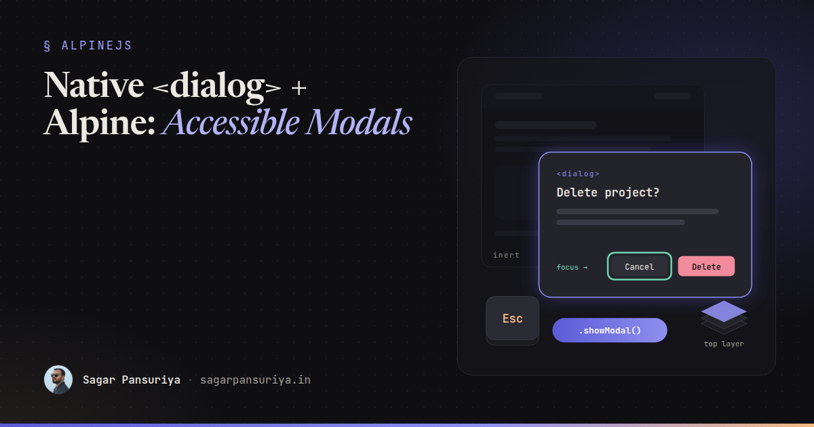
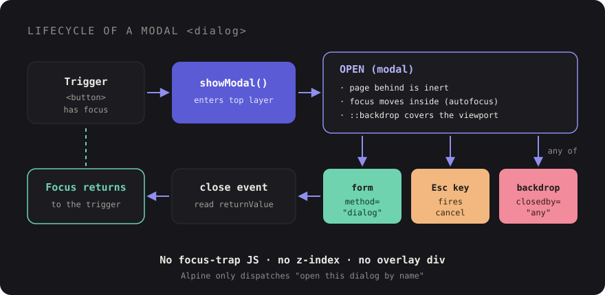

Accessible Modals with Native <dialog> and a Tiny Alpine.js Wrapper


You've probably written this modal before. A fixed-position div, a dark overlay
behind it, an Alpine x-show, a keydown.escape listener, some
overflow: hidden on the body, and then, if the project had an accessibility
audit, a focus trap bolted on at the end. It works until someone tabs out of it, or a screen
reader user lands on the page behind it, or a z-index: 50 header slides over
the top.
Browsers have shipped a better primitive for years now: the <dialog>
element. Opened the right way, it handles focus, Esc, the backdrop and stacking for you. In
most projects I've worked on, switching to it deletes more code than it adds.
This post covers how <dialog> actually behaves, the handful of modern
attributes and CSS features worth knowing, and a complete reusable Blade + Alpine component
you can drop into a Laravel app.
show() vs showModal(): pick the right one
A <dialog> has two ways to open, and they are not interchangeable.
show() | showModal() | |
|---|---|---|
| Rendered in the top layer | No | Yes, above every z-index |
| Rest of the page | Still interactive | Made inert (no clicks, no focus, hidden from AT) |
::backdrop | No | Yes |
| Esc closes it | No | Yes |
| Use it for | Non-blocking panels, toasts | Confirmations, forms, anything that blocks |
For a modal, it's always showModal(). That one call is what replaces your focus
trap. The page behind the dialog becomes inert, so Tab can only move between elements inside
the dialog and the browser UI. Screen readers stop announcing the content behind it. You
don't need aria-modal, a hidden sentinel element, or the Alpine focus plugin's
x-trap.
Setting the open attribute directly (or toggling it with Alpine) behaves like
show(), not showModal(). That's the most common mistake I see when
people first try the element: they bind :open="isOpen" and wonder why focus
escapes.

What the browser does for you
Once a dialog is opened with showModal(), you get all of this without writing
a line of JavaScript:
- Initial focus: focus moves into the dialog. Add
autofocusto the element that should receive it, for example the first field of a form or the safe button in a destructive confirmation. - Esc to close: pressing Esc fires a
cancelevent and then closes the dialog. - Returning focus: when the dialog closes, browsers move focus back to the element that was focused before it opened, which is usually the button that opened it. Keyboard users land exactly where they were.
- Stacking: the top layer sits above everything else on the page. No more
z-indexarms race with a sticky header or a third-party chat widget.
One thing it does not do is lock page scrolling. That's one line of CSS, using
:has() and the :modal pseudo-class:
html:has(dialog:modal) {
overflow: hidden;
}Closing: form method="dialog" and closedby
The nicest close button is one with no JavaScript at all. A form inside a dialog with
method="dialog" closes the dialog when submitted, and sets
dialog.returnValue to the value of the button that submitted it:
<dialog id="confirm-delete" aria-labelledby="confirm-delete-title">
<h2 id="confirm-delete-title">Delete this project?</h2>
<p>This can't be undone.</p>
<form method="dialog">
<button value="cancel" autofocus>Cancel</button>
<button value="confirm">Delete</button>
</form>
</dialog>Listen for the close event and read returnValue to decide what to
do. Because Esc and the Cancel button both go through close, you handle every
exit path in one place.
For clicking the backdrop to close (light dismiss), there's the newer closedby
attribute:
closedby="any": backdrop click, Esc, and your own code can close it.closedby="closerequest": Esc and your code, but not the backdrop. This is the default for modal dialogs.closedby="none": only your code can close it. Useful for a flow the user must finish, but use it sparingly.
Browser support for closedby is still uneven at the time of writing, so check
MDN for the
current state and treat it as progressive enhancement. The fallback is short: a click whose
target is the dialog itself, landing outside its bounding box, is a click on the backdrop.
The component below includes it.
Styling ::backdrop and animating with @starting-style
The ::backdrop pseudo-element replaces your overlay div. Entry
animations used to be the reason people avoided <dialog>, because it goes
from display: none to visible in one step. Modern CSS fixes that with three
pieces: @starting-style defines where the entry transition starts,
transition-behavior: allow-discrete lets display take part in the
transition so the exit can play, and overlay keeps the element in the top layer
until the exit finishes.
/* resources/css/modal.css */
.modal {
opacity: 0;
translate: 0 1rem;
transition-property: opacity, translate, display, overlay;
transition-duration: .2s;
transition-timing-function: ease-out;
transition-behavior: allow-discrete; /* after the longhands/shorthand */
}
.modal[open] {
opacity: 1;
translate: 0 0;
@starting-style {
opacity: 0;
translate: 0 1rem;
}
}
.modal::backdrop {
background-color: rgb(0 0 0 / 0);
transition: background-color .2s, display .2s allow-discrete, overlay .2s allow-discrete;
}
.modal[open]::backdrop {
background-color: rgb(0 0 0 / .5);
@starting-style {
background-color: rgb(0 0 0 / 0);
}
}
@media (prefers-reduced-motion: reduce) {
.modal { translate: none; transition-duration: .01s; }
}@starting-style and transition-behavior are supported across
current major browsers. overlay is Chromium-only so far. In browsers that
don't support a piece, the dialog simply appears or disappears without the animation. It
still works, which is exactly how an enhancement should fail.
The reusable Blade + Alpine component
Alpine's job here is small: open the dialog by name from anywhere on the page, and give you a hook when it closes. Everything else stays native. This follows the same event-based pattern Laravel Breeze uses for its modal, so it feels familiar in most Laravel codebases.
{{-- resources/views/components/modal.blade.php --}}
@props([
'name',
'title',
'closedby' => 'any',
])
<dialog
x-data="modal(@js($name))"
x-on:open-modal.window="$event.detail === name && open()"
x-on:close-modal.window="$event.detail === name && $el.close()"
x-on:click="backdropFallback($event)"
x-on:close="$dispatch('modal-closed', { name, value: $el.returnValue })"
closedby="{{ $closedby }}"
aria-labelledby="{{ $name }}-title"
{{ $attributes->merge(['class' => 'modal w-full max-w-lg rounded-2xl bg-white p-6 shadow-xl']) }}
>
<h2 id="{{ $name }}-title" class="text-lg font-semibold">{{ $title }}</h2>
<div class="mt-4">
{{ $slot }}
</div>
@isset($footer)
<form method="dialog" class="mt-6 flex justify-end gap-3">
{{ $footer }}
</form>
@endisset
</dialog>And the small Alpine data object, registered once in your Vite entry:
// resources/js/modal.js
import Alpine from 'alpinejs';
const supportsClosedBy = 'closedBy' in HTMLDialogElement.prototype;
Alpine.data('modal', (name) => ({
name,
open() {
this.$el.returnValue = '';
this.$el.showModal();
},
backdropFallback(event) {
if (supportsClosedBy) return;
if (this.$el.getAttribute('closedby') !== 'any') return;
if (event.target !== this.$el) return; // a click on content inside the dialog
const r = this.$el.getBoundingClientRect();
const inside = event.clientX >= r.left && event.clientX <= r.right
&& event.clientY >= r.top && event.clientY <= r.bottom;
if (!inside) this.$el.close();
},
}));Using it looks like this. The trigger is a normal button, so focus returns to it when the dialog closes:
<button type="button" x-data x-on:click="$dispatch('open-modal', 'delete-project')">
Delete project
</button>
<x-modal name="delete-project" title="Delete this project?" closedby="closerequest">
<p>All deployments and logs for {{ $project->name }} will be removed.</p>
<x-slot:footer>
<button value="cancel" autofocus class="btn-secondary">Cancel</button>
<button value="confirm" class="btn-danger">Delete</button>
</x-slot:footer>
</x-modal>Then react to the result wherever it makes sense, for example in a parent Alpine component or by calling Livewire:
<div x-data x-on:modal-closed.window="
$event.detail.name === 'delete-project'
&& $event.detail.value === 'confirm'
&& $wire.deleteProject()
">…</div>A few details worth pointing out. The destructive modal uses
closedby="closerequest" so a stray click on the backdrop doesn't dismiss a
decision the user was reading. autofocus sits on Cancel, not Delete, so hitting
Enter by reflex is safe. And the dialog has an accessible name via
aria-labelledby, which screen readers announce when it opens.
A note on Livewire
If a dialog lives inside a Livewire component, a re-render can morph the
<dialog> element and drop its open state. Keep the modal markup stable:
put wire:ignore.self on the <dialog> so Livewire leaves its
own attributes alone while still updating the children, or place the modal outside the part
of the component that re-renders.
Why I stopped hand-rolling focus traps
A custom focus trap has to find every focusable element (including ones added later), wrap Tab and Shift+Tab, handle iframes and shadow DOM, stop the page behind from being read by assistive tech, and restore focus afterwards. Each of those is a place for a bug, and the bugs only show up for keyboard and screen reader users, who are the least likely to file a ticket.
The native element does all of it in the browser, consistently, and gets better without you shipping anything. Your JavaScript shrinks to "open this dialog by name". That's a trade I'll take every time.
Checklist for every modal
- Open it with
showModal(), never by toggling theopenattribute. - Give it an accessible name with
aria-labelledbypointing at its heading. - Put
autofocuson the element that should get focus first (the safe choice for destructive actions). - Close buttons live in a
<form method="dialog">and carry avalue. - Handle the outcome in the
closeevent, readingreturnValue. - Choose
closedbydeliberately, with a light-dismiss fallback if you rely on it. - Lock page scroll with
html:has(dialog:modal). - Animate with
@starting-styleand respectprefers-reduced-motion. - Test it with only a keyboard, then with a screen reader. It takes five minutes.
Next time you reach for x-show and a fixed overlay, try the
<dialog> version first. You'll write less code, and the people who rely
on a keyboard or a screen reader will get a modal that actually behaves like one.
Discussion